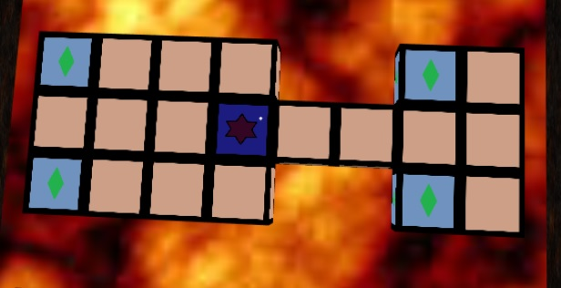
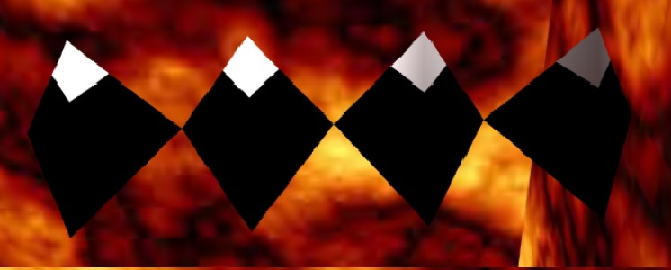

The Royal Game of Ur or as it is also know "Game of Twenty Squares" is an ancient game found in the Royal Tombs of Ur in Iraq by Sir Leonard Woolley in the 1920s.
This game consists of a board composed by 20 cubes on which the main objective is to get all the 7 pieces thought the board.
 1 - Throw the dice to decide who plays first - highest score goes first, if it's a draw, throw again.
2 - Players take turns to throw three binary lots and move one of their pieces.
3 - Only one piece may be moved per throw of the dice and pieces must always move forward around the track.
4 - If a counter lands upon a square occupied by an opposing counter, the counter landed upon is sent off the board and must start again from the beginning.